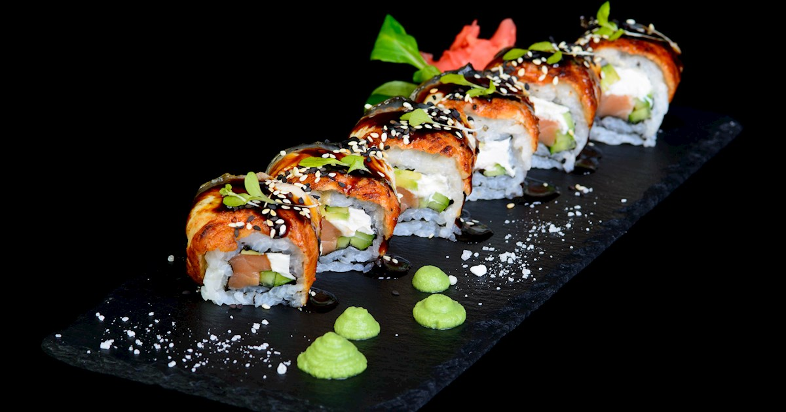

Landmarks

Stanley Park is Vancouver's first and largest urban park, a sprawling peninsula of ancient cedars and scenic coastline that is actually larger than New York's Central Park. The most iconic way to experience it is by cycling the Seawall, a 9-kilometer paved path that offers uninterrupted views of the North Shore Mountains and the Lions Gate Bridge. Deep within the park, you’ll find the famous Totem Poles at Brockton Point, which celebrate the heritage of the Coast Salish First Nations. Whether you're visiting the Vancouver Aquarium or watching the sunset from Third Beach, the park is the literal and metaphorical "lungs" of the city.
Culinary Delights

While the California Roll may be more famous globally, the B.C. Roll is Vancouver's true local pride. Invented in 1974 by legendary chef Hidekazu Tojo at his namesake restaurant, Tojo’s, this roll was designed to showcase British Columbia's world-class wild salmon. It features crispy, barbecued salmon skin paired with sweet glazed teriyaki sauce, cucumber, and sprouts, all wrapped in sushi rice. It’s a masterclass in texture—crunchy, salty, and sweet—and remains a staple on almost every sushi menu in the city, representing Vancouver's deep-rooted Japanese-Canadian culinary fusion.